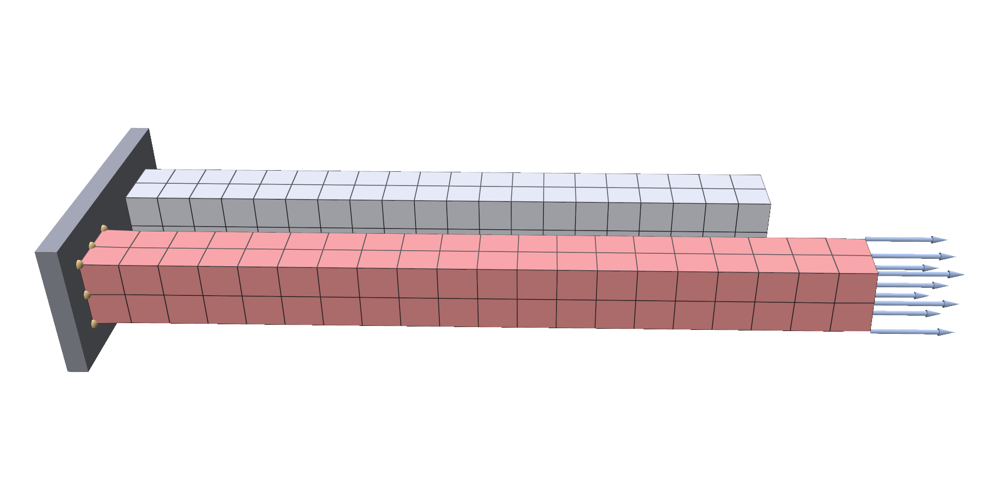
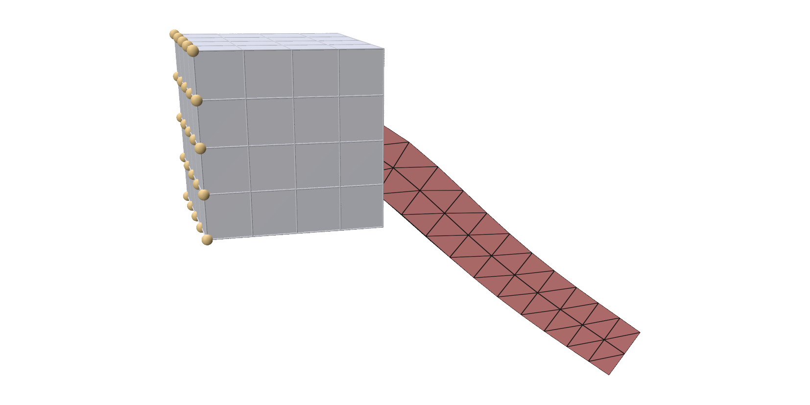
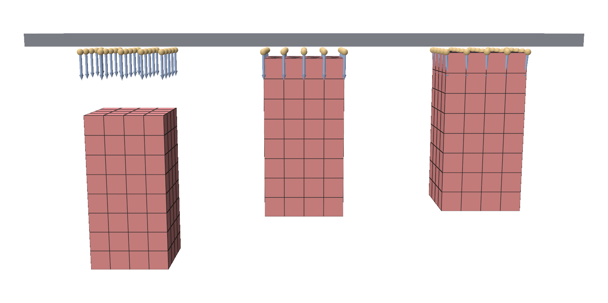
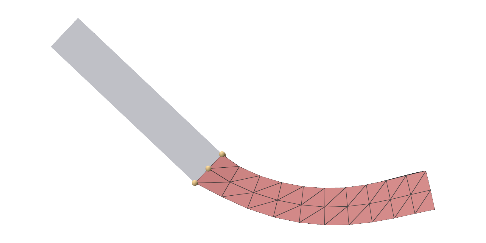
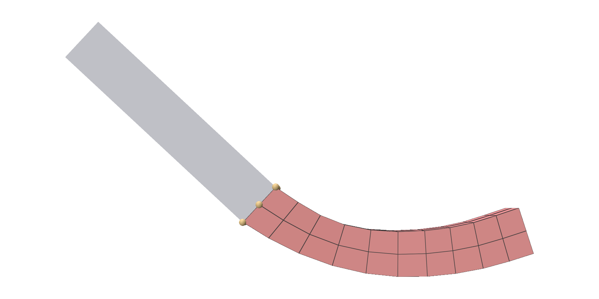

Boundary conditions¶
trusty.boundary_conditions holds bodies in place, moves them, loads them and
joins them to each other. Clamping a face is one call in trusty.fem.
Capability: boundary_conditions.
Quick example¶
A bar clamped at one end and pulled by a traction on the other:
world = trusty.World(backend=backend,
time_stepping="static", # solve for the equilibrium each step
gravity=(0.0, 0.0, 0.0)) # the load is the only force
mesh = make_mesh(size=BAR_SIZE, res=BAR_RES)
material = trusty.StableNeoHookean(youngs_modulus=1e6, poisson_ratio=0.3)
body = add_solid(world, mesh, material, density=1000.0)
trusty.fem.pin_face(world, body, axis=0, coord=0.0) # clamp the x = 0 end
load_faces = end_faces(world, body, x=BAR_SIZE[0]) # triangles on the x = 1 end
trusty.boundary_conditions.attach_surface_load(
world, body, load_faces, np.zeros((len(load_faces), 3))) # Pa, one row per face

The red bar is loaded and the grey one behind it is the same bar at rest. The orange points are the clamped nodes, and the arrows show the traction on the end face. The load starts at zero, and the script raises it step by step; see Surface loads.
Every condition works on some body types and not others:
| Condition | Function | Works on |
|---|---|---|
| Clamp a face | trusty.fem.pin_face |
solids, embedded solids, reduced solids |
| Spring pin | pin_to_target |
solids, embedded solids, shells, rods |
| Surface load | attach_surface_load |
solids, embedded solids, affine bodies |
| Stitch | stitch |
a solid, shell or rod onto an embedded solid or affine body |
| Attach | attach |
a reduced solid onto an embedded solid or affine body |
Embedded solids can also pin their surface directly; see Weak pins.
Add every condition before the first world.step(). After that you can move
targets and change stiffnesses and tractions, but you can't add new conditions.
Full script: python examples/boundary_conditions/fem_surface_load.py
"""Surface load: a bar clamped at one end and pulled by a traction on the other.
A hex (or tet) bar is clamped on its x = 0 face and carries a traction (force
per unit area, Pa) on its x = 1 end face. The traction is a *dead load*: it
keeps its world direction and acts on the faces' rest area, like gravity acts
on the body's mass.
`attach_surface_load` puts the load on the end faces, starting at zero, and
the run ramps it up to its full value with `set_tractions`, stretching the bar
a little further each step. Each step solves for static equilibrium (no
inertia) with gravity off, so the stretch is the load's doing alone.
Usage:
python examples/boundary_conditions/fem_surface_load.py # polyscope
python examples/boundary_conditions/fem_surface_load.py --no-viewer # print the stretch
python examples/boundary_conditions/fem_surface_load.py --element tet
"""
from __future__ import annotations
import argparse
import sys
from pathlib import Path
import numpy as np
import trusty
sys.path.insert(0, str(Path(__file__).resolve().parent.parent))
from utils import init_polyscope # noqa: E402
BAR_SIZE = (1.0, 0.1, 0.1)
BAR_RES = (20, 2, 2)
TRACTION_MAX = 1.0e5 # Pa in +x, the fully ramped end traction
SOLIDS = {"hex": (trusty.make_beam_hex_mesh, trusty.fem.add_hex_solid),
"tet": (trusty.make_beam_tet_mesh, trusty.fem.add_tet_solid)}
def end_faces(world, body, x):
"""Indices of the body's surface triangles that lie on the plane at `x`."""
tris = np.asarray(trusty.fem.read_surface_triangles(world, body))
verts = np.asarray(trusty.fem.read_positions(world, body))
on_plane = np.all(np.abs(verts[tris, 0] - x) < 1e-9, axis=1)
return np.flatnonzero(on_plane).tolist()
def build_world(backend: str = "auto", element: str = "hex"):
make_mesh, add_solid = SOLIDS[element]
world = trusty.World(backend=backend,
time_stepping="static", # solve for the equilibrium each step
gravity=(0.0, 0.0, 0.0)) # the load is the only force
mesh = make_mesh(size=BAR_SIZE, res=BAR_RES)
material = trusty.StableNeoHookean(youngs_modulus=1e6, poisson_ratio=0.3)
body = add_solid(world, mesh, material, density=1000.0)
trusty.fem.pin_face(world, body, axis=0, coord=0.0) # clamp the x = 0 end
load_faces = end_faces(world, body, x=BAR_SIZE[0]) # triangles on the x = 1 end
trusty.boundary_conditions.attach_surface_load(
world, body, load_faces, np.zeros((len(load_faces), 3))) # Pa, one row per face
return world, body, mesh
def traction_at(step: int, steps: int) -> float:
return TRACTION_MAX * min(1.0, (step + 1) / max(1, steps))
def ramp(world, body, step: int, steps: int):
"""Set this step's traction on every loaded face, then advance."""
n = trusty.boundary_conditions.num_loaded_faces(world, body)
t = np.tile([traction_at(step, steps), 0.0, 0.0], (n, 1))
trusty.boundary_conditions.set_tractions(world, body, t)
world.step()
def _register(ps, world, body, mesh, element):
x = np.asarray(trusty.fem.read_positions(world, body)).copy()
cells = {"hexes": np.asarray(mesh.hexes)} if element == "hex" else \
{"tets": np.asarray(mesh.tets)}
ps_mesh = ps.register_volume_mesh("bar", x, **cells)
ps_mesh.set_edge_width(1.0)
return ps_mesh
def run_polyscope(world, body, mesh, element, steps):
ps = init_polyscope(headless=False)
ps_mesh = _register(ps, world, body, mesh, element)
state = {"i": 0, "playing": False} # play starts OFF
def callback():
import polyscope.imgui as psim
_, state["playing"] = psim.Checkbox("play", state["playing"])
psim.SameLine()
if (psim.Button("step") or state["playing"]) and state["i"] < steps:
ramp(world, body, state["i"], steps)
state["i"] += 1
ps_mesh.update_vertex_positions(trusty.fem.read_positions(world, body))
t = traction_at(state["i"] - 1, steps) if state["i"] else 0.0
psim.Text(f"step {state['i']} / {steps} traction_x = {t:.0f} Pa")
ps.set_user_callback(callback)
ps.show()
def run_headless(world, body, mesh, steps):
rest = np.asarray(mesh.vertices)
for i in range(steps):
ramp(world, body, i, steps)
if not world.last_report().converged:
raise SystemExit(f"step {i}: the solve did not converge")
x = np.asarray(trusty.fem.read_positions(world, body))
tractions = trusty.boundary_conditions.tractions(world, body)
def mean_dx(xref):
on = np.abs(rest[:, 0] - xref) < 1e-9
return float((x[on, 0] - rest[on, 0]).mean())
area = BAR_SIZE[1] * BAR_SIZE[2]
print(f"end traction {tractions[0, 0]:.0f} Pa on {len(tractions)} faces "
f"= {tractions[0, 0] * area:.0f} N in total")
print(f"loaded (x = 1) end moved {mean_dx(BAR_SIZE[0]):+.4f} m")
print(f"clamped (x = 0) end moved {mean_dx(0.0):+.4f} m")
if mean_dx(BAR_SIZE[0]) < 1e-3 or abs(mean_dx(0.0)) > 1e-9:
raise SystemExit("the bar did not stretch, or the clamp moved")
print("OK: the bar stretched under the end traction; the clamp held.")
def main():
parser = argparse.ArgumentParser(description=__doc__.split("\n")[0])
parser.add_argument("--backend", choices=["auto", "cpu", "accelerate"], default="auto")
parser.add_argument("--element", choices=list(SOLIDS), default="hex")
parser.add_argument("--steps", type=int, default=20,
help="load increments to reach the full traction")
parser.add_argument("--no-viewer", action="store_true",
help="headless: ramp the load, then print the stretch")
args = parser.parse_args()
trusty.check_capabilities("boundary_conditions")
world, body, mesh = build_world(args.backend, args.element)
if args.no_viewer:
run_headless(world, body, mesh, args.steps)
else:
run_polyscope(world, body, mesh, args.element, args.steps)
if __name__ == "__main__":
main()
Clamping a face¶
trusty.fem.pin_face(world, body, axis, coord, tol=1e-6) fixes every node that
lies on a plane at its rest position. The clamp is exact: the nodes do not move
at all.
| Argument | Meaning |
|---|---|
axis |
the axis the plane is normal to: 0, 1 or 2 for x, y or z |
coord |
where the plane crosses that axis, in the units of the mesh |
tol |
how far off the plane a node may be and still be clamped |
Shells and rods have clamps of their own: trusty.shells.pin_face and
pin_vertices on shells, and trusty.rods.pin_vertices on
rods.
The nodes of an embedded solid are its hex grid's nodes, which need not lie on
the surface. Widen tol so the clamp catches the grid nodes near the face:
# Clamp the hex-grid nodes within `tol` of the post's back face: the grid
# need not line up with the surface, so allow up to about half a hex.
trusty.fem.pin_face(world, post, axis=0, coord=POST_ORIGIN[0], tol=0.06)

The orange points are the clamped grid nodes. The soft flag is stitched to the cube.
A few things to know:
- A plane with no nodes on it clamps nothing, and there is no error. Check
that
coordis on the mesh. - A clamp reports no force. To measure how hard a face is held, pin it with a stiff spring pin instead.
- A clamp holds its nodes even if something presses into them. Where the pinned part may touch something, use a spring pin, which gives way to contact. See Moving targets.
Full script: python examples/boundary_conditions/fem_embedded_flag.py
"""Soft FEM flag stitched to a clamped embedded post.
An embedded (voxelized) cube acts as a stiff post: its back face is clamped to
the world. A soft FEM beam ("flag") reaches out in +x; its root cap sits
inside the post's hex grid and is *stitched* onto it, so the root vertices
move exactly with the post, as if they were points of it. Under gravity the
flag cantilevers off the anchored post and sags.
Usage:
python examples/boundary_conditions/fem_embedded_flag.py # polyscope
python examples/boundary_conditions/fem_embedded_flag.py --no-viewer # headless
python examples/boundary_conditions/fem_embedded_flag.py --steps 400
"""
from __future__ import annotations
import argparse
import sys
from pathlib import Path
import numpy as np
import trusty
sys.path.insert(0, str(Path(__file__).resolve().parent.parent))
from utils import init_polyscope, make_bar_trimesh # noqa: E402
# Post: an axis-aligned cube whose cage straddles x = 0 so the flag root
# (x = 0) lands inside it.
POST_SIZE = (0.4, 0.4, 0.4)
POST_ORIGIN = (-0.3, -0.2, -0.1)
VOXEL_SIZE = 0.1
FLAG_SIZE = (1.0, 0.15, 0.15)
FLAG_RES = (12, 2, 2)
def build_world(backend: str = "auto"):
trusty.check_capabilities("boundary_conditions", "embedded")
world = trusty.World(backend=backend,
timestep=1.0 / 60.0,
newton=trusty.NewtonConfig(max_iters=50))
material = trusty.StableNeoHookean(youngs_modulus=1e5, poisson_ratio=0.3)
# -- Anchor: stiff embedded post, back (x = min) face clamped. ---------
stiff = trusty.StableNeoHookean(youngs_modulus=1e6, poisson_ratio=0.3)
pV, pF = make_bar_trimesh(POST_SIZE, res=(4, 4, 4), origin=POST_ORIGIN)
post = trusty.embedded.add_embedded_solid(
world, pV, pF, VOXEL_SIZE, stiff, density=1000.0)
# Clamp the hex-grid nodes within `tol` of the post's back face: the grid
# need not line up with the surface, so allow up to about half a hex.
trusty.fem.pin_face(world, post, axis=0, coord=POST_ORIGIN[0], tol=0.06)
# -- Follower: soft FEM flag reaching out in +x, root at x = 0. ----------
tm = trusty.make_beam_tet_mesh(size=FLAG_SIZE, res=FLAG_RES)
V = np.asarray(tm.vertices).copy()
# Centre the flag's y/z on the post so its root cap sits inside the cage.
V[:, 1] += -FLAG_SIZE[1] / 2
V[:, 2] += (POST_ORIGIN[2] + POST_SIZE[2] / 2) - FLAG_SIZE[2] / 2
tm = trusty.make_tet_mesh(V, np.asarray(tm.tets))
flag = trusty.fem.add_tet_solid(world, tm, material, density=1000.0)
# Root cap = flag vertices on the x = 0 face; bond them to the post.
root = np.where(np.abs(V[:, 0]) < 1e-9)[0].tolist()
trusty.boundary_conditions.stitch(world, flag, root, post)
print(f"Embedded post + soft FEM flag, {len(root)} root verts stitched.")
return world, post, flag
def _register_visuals(ps, world, post, flag):
pV = trusty.embedded.read_embedded_surface(world, post)
pF = trusty.embedded.surface_triangles(world, post)
ps_post = ps.register_surface_mesh("embedded_post", np.asarray(pV),
np.asarray(pF), color=(0.55, 0.55, 0.6))
tm = trusty.fem.read_tet_mesh(world, flag)
ps_flag = ps.register_volume_mesh(
"soft_flag", np.asarray(tm.vertices).copy(), tets=np.asarray(tm.tets))
ps_flag.set_color((0.9, 0.5, 0.2))
ps_flag.set_edge_width(1.0)
return ps_post, ps_flag
def _update_visuals(ps_post, ps_flag, world, post, flag):
ps_post.update_vertex_positions(
np.asarray(trusty.embedded.read_embedded_surface(world, post)))
ps_flag.update_vertex_positions(
np.asarray(trusty.fem.read_tet_mesh(world, flag).vertices))
def run_polyscope(world, post, flag, steps: int):
ps = init_polyscope(headless=False)
ps_post, ps_flag = _register_visuals(ps, world, post, flag)
state = {"i": 0, "playing": False}
def advance():
if state["i"] < steps:
world.step()
state["i"] += 1
_update_visuals(ps_post, ps_flag, world, post, flag)
def callback():
import polyscope.imgui as psim
_, state["playing"] = psim.Checkbox("play", state["playing"])
psim.SameLine()
if psim.Button("step"):
advance()
elif state["playing"]:
advance()
psim.Text(f"step {state['i']} / {steps}")
r = world.last_report()
psim.Text(f"solve: iters={r.iterations} res={r.final_residual:.2e} "
f"{'ok' if r.converged else 'DIVERGED'}")
ps.set_user_callback(callback)
ps.show()
def run_headless(world, post, flag, steps: int):
print(f"Running {steps} steps headless...")
V0 = np.asarray(trusty.fem.read_tet_mesh(world, flag).vertices).copy()
root = np.where(np.abs(V0[:, 0]) < 1e-9)[0] # bonded (stitched) verts
tip = np.where(np.abs(V0[:, 0] - FLAG_SIZE[0]) < 1e-9)[0]
for i in range(steps):
world.step()
r = world.last_report()
if not r.converged:
raise SystemExit(f"step {i}: solve DIVERGED (res={r.final_residual:.2e})")
V = np.asarray(trusty.fem.read_tet_mesh(world, flag).vertices)
if not np.isfinite(V).all():
raise SystemExit(f"step {i}: non-finite flag vertices")
if (i + 1) % 50 == 0:
print(f" step {i + 1:4d} iters={r.iterations} "
f"res={r.final_residual:.2e}")
V1 = np.asarray(trusty.fem.read_tet_mesh(world, flag).vertices)
root_move = np.linalg.norm(V1[root] - V0[root], axis=1).max()
tip_sag = (V0[tip, 2] - V1[tip, 2]).mean()
print(f"Done. tip sagged {tip_sag:.3f} m; bonded root moved {root_move:.4f} m.")
# The stitch must hold the root to the (stiff, pinned) post while the free
# portion cantilevers: a free-falling flag would move root and tip alike.
if tip_sag < 0.05:
raise SystemExit("flag did not sag — check the setup")
if root_move > 0.05:
raise SystemExit("bonded root drifted — the stitch did not hold")
def main():
p = argparse.ArgumentParser(description=__doc__.split("\n")[0])
p.add_argument("--backend", choices=["auto", "cpu", "accelerate"], default="auto")
p.add_argument("--steps", type=int, default=300)
p.add_argument("--no-viewer", action="store_true")
args = p.parse_args()
world, post, flag = build_world(backend=args.backend)
if args.no_viewer:
run_headless(world, post, flag, args.steps)
else:
run_polyscope(world, post, flag, args.steps)
if __name__ == "__main__":
main()
Spring pins¶
pin_to_target(world, body, nodes, targets, stiffness) pulls each node toward
its own target with a spring, and returns a pin handle. The functions below take
that handle. Here a bar's left face is held at rest by a very stiff pin, and
its right face is held by a softer one whose targets will move:
V = np.asarray(mesh.vertices)
left_nodes = np.where(V[:, 0] < 1e-9)[0].tolist()
right_nodes = np.where(V[:, 0] > BAR_SIZE[0] - 1e-9)[0].tolist()
left_targets = V[left_nodes].copy()
right_targets_init = V[right_nodes].copy()
trusty.boundary_conditions.pin_to_target(
world, body, left_nodes, left_targets, stiffness=1e8)
right_pin = trusty.boundary_conditions.pin_to_target(
world, body, right_nodes, right_targets_init, stiffness=5e6)
| Argument | Meaning |
|---|---|
nodes |
indices of the pinned nodes: the vertices of a shell or rod, or the nodes of a solid (for an embedded solid, of its hex grid) |
targets |
target positions, (len(nodes), 3) |
stiffness |
spring stiffness in Pa. It is scaled by the volume each node carries, so the same value behaves the same at any mesh resolution. |
A body can carry any number of pins. Pins on the same nodes add up.
Moving targets¶
set_pin_targets(world, pin, targets) replaces the targets, one row per pinned
node, from the next step on. Here the right face's targets follow a sine wave:
phase = (2 * np.pi * step) / DRIVE_PERIOD_STEPS
dz = DRIVE_AMP * np.sin(phase)
targets = right_targets_init.copy()
targets[:, 2] += dz
Each step, set the new targets, then step:
targets, dz = prescribed_targets(step, right_targets_init)
trusty.boundary_conditions.set_pin_targets(world, right_pin, targets)
world.step()
The orange points are the right face's targets. At the bottom of the drive some are below the floor; a spring pin gives, so the bar rests on the floor instead of passing through it.
Full script: python examples/boundary_conditions/moving_pin.py
"""Spring pins with moving targets, and a floor in the way.
A soft cantilever bar:
- its left face is pinned at its rest position with a high stiffness, so it
acts as a clamp;
- its right face is pinned to targets that move up and down on a sine wave;
- a floor below stops the bar. The targets dip below the floor, but a spring
pin gives, so the bar rests on the floor instead of passing through it.
Usage:
python examples/boundary_conditions/moving_pin.py # polyscope
python examples/boundary_conditions/moving_pin.py --no-viewer # print the drive
"""
from __future__ import annotations
import argparse
import sys
from pathlib import Path
import numpy as np
import trusty
sys.path.insert(0, str(Path(__file__).resolve().parent.parent))
from utils import init_polyscope # noqa: E402
BAR_SIZE = (1.0, 0.2, 0.2)
BAR_RES = (10, 2, 2)
FLOOR_Z = -0.2
DRIVE_AMP = 0.27
DRIVE_PERIOD_STEPS = 60
def build_world(backend: str):
trusty.check_capabilities("contact")
mesh = trusty.make_beam_hex_mesh(size=BAR_SIZE, res=BAR_RES)
material = trusty.StableNeoHookean(youngs_modulus=1e5, poisson_ratio=0.3)
world = trusty.World(backend=backend,
timestep=1.0 / 60.0,
newton=trusty.NewtonConfig(max_iters=60))
trusty.contact.enable(world, trusty.contact.Config(dhat=5e-3, kappa=1e4))
body = trusty.fem.add_hex_solid(world, mesh, material, density=1000.0)
V = np.asarray(mesh.vertices)
left_nodes = np.where(V[:, 0] < 1e-9)[0].tolist()
right_nodes = np.where(V[:, 0] > BAR_SIZE[0] - 1e-9)[0].tolist()
left_targets = V[left_nodes].copy()
right_targets_init = V[right_nodes].copy()
trusty.boundary_conditions.pin_to_target(
world, body, left_nodes, left_targets, stiffness=1e8)
right_pin = trusty.boundary_conditions.pin_to_target(
world, body, right_nodes, right_targets_init, stiffness=5e6)
trusty.add_floor_plane(world, z=FLOOR_Z)
return world, body, right_pin, right_nodes, right_targets_init
def prescribed_targets(step: int, right_targets_init: np.ndarray):
phase = (2 * np.pi * step) / DRIVE_PERIOD_STEPS
dz = DRIVE_AMP * np.sin(phase)
targets = right_targets_init.copy()
targets[:, 2] += dz
return targets, dz
def drive(world, right_pin, right_targets_init, step: int):
"""Move the right face's targets for this step, then advance."""
targets, dz = prescribed_targets(step, right_targets_init)
trusty.boundary_conditions.set_pin_targets(world, right_pin, targets)
world.step()
return dz
def _register_visuals(ps, world, body):
mesh = trusty.fem.read_mesh(world, body)
verts = np.asarray(mesh.vertices).copy()
hexes = np.asarray(mesh.hexes)
ps_mesh = ps.register_volume_mesh("bar", verts, hexes=hexes)
ps_mesh.set_edge_width(1.0)
Lx = BAR_SIZE[0]
floor = np.array(
[[-0.5, -0.5, FLOOR_Z], [Lx + 0.5, -0.5, FLOOR_Z],
[Lx + 0.5, 0.5, FLOOR_Z], [-0.5, 0.5, FLOOR_Z]])
ps.register_surface_mesh(
"floor", floor, np.array([[0, 1, 2], [0, 2, 3]], dtype=np.int32),
color=(0.6, 0.6, 0.6))
return ps_mesh
def run_polyscope(backend: str, n_steps: int):
ps = init_polyscope(headless=False)
world, body, right_pin, _, right_targets_init = build_world(backend)
ps_mesh = _register_visuals(ps, world, body)
state = {"i": 0, "playing": False} # play starts OFF
def callback():
import polyscope.imgui as psim
_, state["playing"] = psim.Checkbox("play", state["playing"])
psim.SameLine()
if psim.Button("step") or state["playing"]:
if state["i"] < n_steps:
drive(world, right_pin, right_targets_init, state["i"])
state["i"] += 1
ps_mesh.update_vertex_positions(
np.asarray(trusty.fem.read_mesh(world, body).vertices))
psim.Text(f"step {state['i']} / {n_steps}")
rep = world.last_report()
psim.Text(
f"last solve: iters={rep.iterations} "
f"residual={rep.final_residual:.3e} "
f"{'converged' if rep.converged else 'DIVERGED'}")
ps.set_user_callback(callback)
ps.show()
def run_headless(backend: str, n_steps: int):
world, body, right_pin, right_nodes, right_targets_init = build_world(backend)
print(f"{'step':>4} {'target dz':>9} {'face dz':>8} {'lowest z':>8} pin force z (N)")
lowest = np.inf
for i in range(n_steps):
dz = drive(world, right_pin, right_targets_init, i)
if not world.last_report().converged:
raise SystemExit(f"step {i}: the solve did not converge")
x = np.asarray(trusty.fem.read_positions(world, body))
lowest = min(lowest, x[:, 2].min())
if i % 10 == 0:
face_dz = x[right_nodes, 2].mean() - right_targets_init[:, 2].mean()
fz = trusty.boundary_conditions.pin_total_force(world, right_pin)[2]
print(f"{i:4d} {dz:+9.3f} {face_dz:+8.3f} {x[:, 2].min():+8.3f} {fz:+.1f}")
print(f"Lowest point reached: z = {lowest:.3f} (floor at z = {FLOOR_Z})")
if lowest < FLOOR_Z - 1e-3:
raise SystemExit("the bar passed through the floor")
def main():
ap = argparse.ArgumentParser(description=__doc__.split("\n")[0])
ap.add_argument("--backend",
choices=["auto", "cpu", "cuda", "accelerate"], default="auto")
ap.add_argument("--steps", type=int, default=120)
ap.add_argument("--no-viewer", action="store_true",
help="headless: print the drive and the pin force every 10 steps")
args = ap.parse_args()
if args.no_viewer:
run_headless(args.backend, args.steps)
else:
run_polyscope(args.backend, args.steps)
if __name__ == "__main__":
main()
Stiffness and reaction forces¶
A spring pin stretches under load: the pinned nodes settle away from their targets by about force / (stiffness × V), where V is the volume the pinned nodes carry. Here a 16 kg block hangs from a pin on its top face:
rest = np.asarray(mesh.vertices)
top = np.flatnonzero(rest[:, 2] > SIZE[2] - 1e-9) # the top face's nodes
pin = trusty.boundary_conditions.pin_to_target(
world, body, top.tolist(), rest[top], stiffness=STIFFNESSES[0])
set_pin_stiffness(world, pin, stiffness) changes the stiffness from the next
step on. The example raises it tenfold twice, solving for the hanging block
each time:
pin_forces returns the force on each pinned node from the last step, and
pin_total_force returns their sum:
forces = trusty.boundary_conditions.pin_forces(world, pin) # one row per pinned node
total = trusty.boundary_conditions.pin_total_force(world, pin) # their sum (fx, fy, fz)
Each row is the pull of the body on its target, stiffness × V × (x − target). The pin pushes back on the body with the opposite force. For the hanging block the total is the block's weight, pointing down, at every stiffness:
| Stiffness (Pa) | Gap below the targets (m) | pin_total_force z (N) |
|---|---|---|
| 1e6 | 0.157 | −156.96 |
| 1e7 | 0.0157 | −156.96 |
| 1e8 | 0.00157 | −156.96 |

From left to right: stiffness 1e6, 1e7 and 1e8 Pa. The orange points are the targets, and the arrows show the direction each pinned node pulls on its target.
| Function | Does |
|---|---|
pin_to_target(world, body, nodes, targets, stiffness) |
pin nodes to targets; returns the pin |
set_pin_targets(world, pin, targets) |
move the targets, (len(nodes), 3) |
set_pin_stiffness(world, pin, stiffness) |
change the stiffness (Pa) |
pin_nodes(world, pin) |
the pinned nodes |
pin_targets(world, pin) |
the current targets, (len(nodes), 3) |
pin_stiffness(world, pin) |
the current stiffness |
pin_forces(world, pin) |
the force per pinned node (N) from the last step, (len(nodes), 3); zero before the first step |
pin_total_force(world, pin) |
the sum of pin_forces, as (fx, fy, fz) |
num_pins(world, body) |
how many pins the body carries |
Full script: python examples/boundary_conditions/hanging_block.py
"""A block hung from a soft pin: pin stiffness and the pin's reaction force.
A 16 kg block hangs from its top face, which is held by a spring pin
(`pin_to_target`) at its rest position. A spring pin gives a little under load:
the pinned face settles below its targets by about weight / (k * V), where k is
the pin stiffness (Pa) and V the volume the pinned nodes carry. Each step
solves for the hanging equilibrium, so the example raises the stiffness with
`set_pin_stiffness` and re-solves: the gap shrinks tenfold each time, while the
pin's reaction force (`pin_total_force`) stays equal to the block's weight.
Usage:
python examples/boundary_conditions/hanging_block.py # live polyscope
python examples/boundary_conditions/hanging_block.py --no-viewer # print the table
"""
from __future__ import annotations
import argparse
import sys
from pathlib import Path
import numpy as np
import trusty
sys.path.insert(0, str(Path(__file__).resolve().parent.parent))
from utils import init_polyscope # noqa: E402
SIZE = (0.2, 0.2, 0.4) # m; the block hangs from its top face at z = 0.4
RES = (4, 4, 8)
DENSITY = 1000.0 # kg/m^3, so the block weighs 16 kg
STIFFNESSES = (1e6, 1e7, 1e8) # Pa; the pin is stiffened through these
def build_world(backend: str = "auto"):
world = trusty.World(backend=backend,
time_stepping="static") # every step solves for the equilibrium
mesh = trusty.make_beam_hex_mesh(size=SIZE, res=RES)
material = trusty.StableNeoHookean(youngs_modulus=1e6, poisson_ratio=0.4)
body = trusty.fem.add_hex_solid(world, mesh, material, density=DENSITY)
rest = np.asarray(mesh.vertices)
top = np.flatnonzero(rest[:, 2] > SIZE[2] - 1e-9) # the top face's nodes
pin = trusty.boundary_conditions.pin_to_target(
world, body, top.tolist(), rest[top], stiffness=STIFFNESSES[0])
return world, body, pin, mesh, top
def hang(world, pin, stiffness: float):
"""Set the pin's stiffness and solve for the new equilibrium."""
trusty.boundary_conditions.set_pin_stiffness(world, pin, stiffness)
world.step()
def measure(world, body, pin, top):
"""The pin's gap below its targets (m), and its reaction force (N)."""
x = np.asarray(trusty.fem.read_positions(world, body))
targets = trusty.boundary_conditions.pin_targets(world, pin)
gap = float(np.mean(targets[:, 2] - x[top, 2]))
forces = trusty.boundary_conditions.pin_forces(world, pin) # one row per pinned node
total = trusty.boundary_conditions.pin_total_force(world, pin) # their sum (fx, fy, fz)
return gap, forces, np.asarray(total)
def weight():
return DENSITY * float(np.prod(SIZE)) * 9.81
def run_headless(world, body, pin, top):
print(f"block weight: {weight():.2f} N")
print(f"{'stiffness (Pa)':>15} {'gap (m)':>9} {'reaction fz (N)':>15}")
for k in STIFFNESSES:
hang(world, pin, k)
if not world.last_report().converged:
raise SystemExit(f"k={k:.0e}: the solve did not converge")
gap, _, total = measure(world, body, pin, top)
print(f"{k:15.0e} {gap:9.2e} {total[2]:15.2f}")
if abs(-total[2] - weight()) > 1e-6 * weight():
raise SystemExit("the reaction force does not balance the weight")
print("OK: the reaction balances the weight; a stiffer pin sags less.")
def run_polyscope(world, body, pin, mesh, top):
ps = init_polyscope(headless=False)
m = ps.register_volume_mesh("block", trusty.fem.read_positions(world, body),
hexes=np.asarray(mesh.hexes))
m.set_edge_width(1.0)
ps.register_point_cloud("targets", trusty.boundary_conditions.pin_targets(world, pin),
radius=0.006)
state = {"log_k": np.log10(STIFFNESSES[0])}
def refresh():
hang(world, pin, 10.0 ** state["log_k"])
x = np.asarray(trusty.fem.read_positions(world, body))
m.update_vertex_positions(x)
_, forces, _ = measure(world, body, pin, top)
nodes = ps.register_point_cloud("pinned nodes", x[top], radius=0.004)
nodes.add_vector_quantity("pin force", forces, enabled=True)
refresh()
def callback():
import polyscope.imgui as psim
changed, state["log_k"] = psim.SliderFloat("log10 stiffness (Pa)", state["log_k"],
5.5, 9.0)
if changed:
refresh()
gap, _, total = measure(world, body, pin, top)
psim.Text(f"gap below targets {gap:.2e} m")
psim.Text(f"reaction fz {total[2]:.2f} N (weight {weight():.2f} N)")
ps.set_user_callback(callback)
ps.show()
def main():
ap = argparse.ArgumentParser(description=__doc__.split("\n")[0])
ap.add_argument("--backend", choices=["auto", "cpu", "cuda", "accelerate"], default="auto")
ap.add_argument("--no-viewer", action="store_true",
help="headless: step through the stiffnesses and print the table")
args = ap.parse_args()
world, body, pin, mesh, top = build_world(args.backend)
if args.no_viewer:
run_headless(world, body, pin, top)
else:
run_polyscope(world, body, pin, mesh, top)
if __name__ == "__main__":
main()
Surface loads¶
attach_surface_load(world, body, load_faces, tractions) applies a traction
(force per unit area, Pa) to chosen triangles of a body's surface. It is a
dead load: it keeps its direction in the world and acts on the triangles'
rest area, so a traction t on an area A always pulls with t × A. In the
quick example that is 1e5 Pa on 0.01 m², or 1000 N.
load_faces are indices into the body's surface triangles:
| Body | Triangles from |
|---|---|
| solid | trusty.fem.read_surface_triangles(world, body) |
| embedded solid | trusty.embedded.surface_triangles(world, body), the input surface |
| affine body | trusty.affine.surface(world, body), its second array |
The quick example picks the triangles on the bar's end:
tris = np.asarray(trusty.fem.read_surface_triangles(world, body))
verts = np.asarray(trusty.fem.read_positions(world, body))
on_plane = np.all(np.abs(verts[tris, 0] - x) < 1e-9, axis=1)
return np.flatnonzero(on_plane).tolist()
tractions has one row per face in load_faces, so the load can vary across
the surface. set_tractions replaces all of them from the next step on. The
example ramps the load up this way, so each solve starts close to the last:
n = trusty.boundary_conditions.num_loaded_faces(world, body)
t = np.tile([traction_at(step, steps), 0.0, 0.0], (n, 1))
trusty.boundary_conditions.set_tractions(world, body, t)
world.step()
A body takes one surface load. Calling attach_surface_load again replaces
the first, so put every loaded face in one call. Shells and rods don't take
surface loads.
| Function | Does |
|---|---|
attach_surface_load(world, body, load_faces, tractions) |
load surface triangles with tractions, (len(load_faces), 3), Pa |
set_tractions(world, body, tractions) |
replace the tractions |
tractions(world, body) |
the current tractions |
num_loaded_faces(world, body) |
how many faces carry the load |
Joining bodies¶
To join two bodies, bond some vertices of one (the follower) to the other
(the anchor). Each bonded vertex is tied to the point of the anchor where it
sits at rest. There are two kinds of bond: stitch is exact and attach is a
spring.
Stitching¶
stitch(world, follower, verts, anchor) makes the follower's verts move
exactly with the anchor, as if they were points of it. Here a soft beam is
stitched to the tip of a hinged affine bar:
# Root cap = the beam vertices on the x = 1 face; bond them to the bar.
root = np.where(np.abs(V[:, 0] - BAR_LEN) < 1e-9)[0].tolist()
trusty.boundary_conditions.stitch(world, beam, root, bar)

The orange points are the stitched vertices. Released level, the bar swings down and the beam whips behind it.
The follower is a solid, a shell or a rod. The anchor
is an embedded solid or an affine body. The follower and its
anchor don't collide with each other. There are two more examples:
fem_embedded_flag.py stitches a solid to an embedded cube (the
clamp image), and shell_affine_flag.py stitches a shell
to an affine bar.
Full script: python examples/boundary_conditions/fem_affine_pendulum.py
"""Soft FEM beam stitched to a swinging affine bar.
A near-rigid affine bar spans x in [0, 1] and is hinged to the world at its
left end by a grounded revolute joint. A soft FEM beam extends the arm from
x = 1 to x = 2; its root cap (the x = 1 face) is *stitched* onto the affine
bar. The stitched vertices stop being unknowns of their own: they move exactly
with the bar, as if they were points of it. Released horizontal, the bar swings
down like a pendulum and the bonded soft beam whips and sags behind it.
Usage:
python examples/boundary_conditions/fem_affine_pendulum.py # polyscope
python examples/boundary_conditions/fem_affine_pendulum.py --no-viewer # headless
python examples/boundary_conditions/fem_affine_pendulum.py --steps 400
"""
from __future__ import annotations
import argparse
import sys
from pathlib import Path
import numpy as np
import trusty
sys.path.insert(0, str(Path(__file__).resolve().parent.parent))
from utils import init_polyscope # noqa: E402
BAR_LEN = 1.0 # affine bar length (x)
BAR_HALF = 0.1 # bar half-thickness (y, z)
Z0 = 2.0 # start height so the arm can swing freely
BEAM_LEN = 1.0 # soft FEM beam length (x), continuing past the bar tip
BEAM_RES = (10, 2, 2)
def make_box(center, half):
h = np.asarray(half, dtype=np.float64)
V = np.array(
[[-h[0], -h[1], -h[2]], [h[0], -h[1], -h[2]],
[h[0], h[1], -h[2]], [-h[0], h[1], -h[2]],
[-h[0], -h[1], h[2]], [h[0], -h[1], h[2]],
[h[0], h[1], h[2]], [-h[0], h[1], h[2]]],
dtype=np.float64,
) + np.asarray(center, dtype=np.float64)
F = np.array(
[[4, 5, 6], [4, 6, 7], [0, 3, 2], [0, 2, 1],
[1, 2, 6], [1, 6, 5], [0, 4, 7], [0, 7, 3],
[3, 7, 6], [3, 6, 2], [0, 1, 5], [0, 5, 4]],
dtype=np.int32,
)
return V, F
def build_world(backend: str = "auto"):
trusty.check_capabilities("boundary_conditions", "affine")
world = trusty.World(backend=backend, timestep=0.01, newton=trusty.NewtonConfig(max_iters=50))
# -- Anchor: near-rigid affine bar, hinged to the world at x = 0. -----
bar_V, bar_F = make_box((BAR_LEN / 2, 0.0, Z0), (BAR_LEN / 2, BAR_HALF, BAR_HALF))
bar = trusty.affine.add_affine_body(
world, bar_V, bar_F, density=1000.0, stiffness=1e8)
# Grounded revolute hinge along y at the left end (x = 0): the two points
# define the hinge axis.
trusty.affine.add_revolute_joint(
world, bar, (0.0, -BAR_HALF, Z0), (0.0, BAR_HALF, Z0), stiffness=1e8)
# -- Follower: soft FEM beam continuing the arm from x = 1 to x = 2. -----
# Match the bar's 0.2 x 0.2 cross-section so the two align at the tip.
tm = trusty.make_beam_tet_mesh(
size=(BEAM_LEN, 2 * BAR_HALF, 2 * BAR_HALF), res=BEAM_RES)
V = np.asarray(tm.vertices).copy()
# Translate so the root face sits on the bar tip (x = 1), centred in y/z.
V[:, 0] += BAR_LEN
V[:, 1] += -BAR_HALF
V[:, 2] += Z0 - BAR_HALF
tm = trusty.make_tet_mesh(V, np.asarray(tm.tets))
soft = trusty.StableNeoHookean(youngs_modulus=5e4, poisson_ratio=0.4)
beam = trusty.fem.add_tet_solid(world, tm, soft, density=1000.0)
# Root cap = the beam vertices on the x = 1 face; bond them to the bar.
root = np.where(np.abs(V[:, 0] - BAR_LEN) < 1e-9)[0].tolist()
trusty.boundary_conditions.stitch(world, beam, root, bar)
print(f"Affine bar + soft FEM beam, {len(root)} root verts stitched.")
return world, bar, beam
def _register_visuals(ps, world, bar, beam):
bar_V, bar_F = trusty.affine.surface(world, bar)
ps_bar = ps.register_surface_mesh("affine_bar", np.asarray(bar_V),
np.asarray(bar_F), color=(0.55, 0.55, 0.6))
tm = trusty.fem.read_tet_mesh(world, beam)
ps_beam = ps.register_volume_mesh(
"soft_beam", np.asarray(tm.vertices).copy(), tets=np.asarray(tm.tets))
ps_beam.set_color((0.9, 0.5, 0.2))
ps_beam.set_edge_width(1.0)
return ps_bar, ps_beam
def _update_visuals(ps_bar, ps_beam, world, bar, beam):
ps_bar.update_vertex_positions(
np.asarray(trusty.affine.surface(world, bar)[0]))
ps_beam.update_vertex_positions(
np.asarray(trusty.fem.read_tet_mesh(world, beam).vertices))
def run_polyscope(world, bar, beam, steps: int):
ps = init_polyscope(headless=False)
ps_bar, ps_beam = _register_visuals(ps, world, bar, beam)
state = {"i": 0, "playing": False}
def advance():
if state["i"] < steps:
world.step()
state["i"] += 1
_update_visuals(ps_bar, ps_beam, world, bar, beam)
def callback():
import polyscope.imgui as psim
_, state["playing"] = psim.Checkbox("play", state["playing"])
psim.SameLine()
if psim.Button("step"):
advance()
elif state["playing"]:
advance()
psim.Text(f"step {state['i']} / {steps}")
r = world.last_report()
psim.Text(f"solve: iters={r.iterations} res={r.final_residual:.2e} "
f"{'ok' if r.converged else 'DIVERGED'}")
ps.set_user_callback(callback)
ps.show()
def _root_cap_rigidity(V, root):
"""Max relative change in the root cap's pairwise distances vs rest.
The bonded root is the image of a near-rigid affine body, so its shape must
be preserved; a free (unbonded) soft cap would stretch under the swing."""
P = V[root]
d = np.linalg.norm(P[:, None, :] - P[None, :, :], axis=-1)
iu = np.triu_indices(len(root), k=1)
return d[iu]
def run_headless(world, bar, beam, steps: int):
print(f"Running {steps} steps headless...")
V0 = np.asarray(trusty.fem.read_tet_mesh(world, beam).vertices).copy()
root = np.where(np.abs(V0[:, 0] - BAR_LEN) < 1e-9)[0] # bonded verts
rest0 = _root_cap_rigidity(V0, root)
for i in range(steps):
world.step()
r = world.last_report()
if not r.converged:
raise SystemExit(f"step {i}: solve DIVERGED (res={r.final_residual:.2e})")
V = np.asarray(trusty.fem.read_tet_mesh(world, beam).vertices)
if not np.isfinite(V).all():
raise SystemExit(f"step {i}: non-finite beam vertices")
if (i + 1) % 50 == 0:
print(f" step {i + 1:4d} iters={r.iterations} "
f"res={r.final_residual:.2e}")
V1 = np.asarray(trusty.fem.read_tet_mesh(world, beam).vertices)
z_tip = V1[:, 2].min()
strain = np.abs(_root_cap_rigidity(V1, root) - rest0).max() / rest0.max()
print(f"Done. beam tip z dropped to {z_tip:.3f} (start ~{Z0:.3f}); "
f"bonded root cap strain {strain:.1e}.")
if z_tip > Z0 - 0.1:
raise SystemExit("beam did not swing/sag — check the setup")
if strain > 0.02:
raise SystemExit("bonded root cap deformed — the stitch did not hold")
def main():
p = argparse.ArgumentParser(description=__doc__.split("\n")[0])
p.add_argument("--backend", choices=["auto", "cpu", "accelerate"], default="auto")
p.add_argument("--steps", type=int, default=300)
p.add_argument("--no-viewer", action="store_true")
args = p.parse_args()
world, bar, beam = build_world(backend=args.backend)
if args.no_viewer:
run_headless(world, bar, beam, args.steps)
else:
run_polyscope(world, bar, beam, args.steps)
if __name__ == "__main__":
main()
Attaching¶
attach(world, follower, follower_verts, anchor, stiffness=1e6) ties each
vertex to the anchor with a spring. It is how a reduced solid
is joined to other bodies, since a reduced solid can't be stitched. This is
the same pendulum, with a reduced beam:
# Root = the first slice of beam nodes, which overlaps the bar's tip.
root = np.flatnonzero(V[:, 0] < BAR_LEN + 1e-9)
trusty.boundary_conditions.attach(world, beam, root.tolist(), bar, stiffness=stiffness)

stiffness is per vertex, in N/m. The spring stretches with the load, so the
attached vertices trail the bar slightly. Over the swing, the largest gap is:
--stiffness (N/m) |
Largest gap (m) |
|---|---|
| 1e4 | 2.6e-2 |
| 1e6 (default) | 5.0e-4 |
| 1e8 | 5.0e-6 |
The follower is a reduced solid. The anchor is an embedded solid or an affine body.
Full script: python examples/boundary_conditions/attach_pendulum.py
"""Soft reduced beam attached to a swinging affine bar by a spring.
The `attach` twin of fem_affine_pendulum.py. A near-rigid affine bar spans
x in [0, 1] and is hinged to the world at its left end. A soft beam continues
the arm from x = 1 to x = 2; it is a reduced (subspace) body, so instead of
being stitched it is *attached*: its root nodes are tied to the bar by stiff
springs. Released horizontal, the bar swings down and the beam whips behind it.
A spring gives a little under load. The example reports how far the attached
nodes drift from the points of the bar they are tied to; raise `--stiffness`
and the gap shrinks in proportion.
Usage:
python examples/boundary_conditions/attach_pendulum.py # polyscope
python examples/boundary_conditions/attach_pendulum.py --no-viewer # headless
python examples/boundary_conditions/attach_pendulum.py --no-viewer --stiffness 1e4
"""
from __future__ import annotations
import argparse
import sys
import tempfile
from pathlib import Path
import numpy as np
import trusty
from trusty.subspace.precompute import build_basis, pack
sys.path.insert(0, str(Path(__file__).resolve().parent.parent))
from utils import init_polyscope, make_bar_trimesh # noqa: E402
BAR_LEN = 1.0 # affine bar length (x)
BAR_HALF = 0.1 # bar half-thickness (y, z)
Z0 = 2.0 # start height so the arm can swing freely
BEAM_LEN = 1.0 # soft beam length (x), continuing past the bar tip
BEAM_RES = (10, 2, 2)
HANDLES = 6 # size of the beam's reduced basis
def make_beam_basis(mesh, material):
"""A reduced basis for the beam (see the subspace examples)."""
rest = np.asarray(mesh.vertices)
hexes = np.asarray(mesh.hexes)
precompute = trusty.World()
trusty.fem.add_hex_solid(precompute, mesh, material, density=1000.0)
basis = build_basis.build_skinning_eigenmodes(
world=precompute, num_nodes=len(rest), rest_positions=rest,
num_handles=HANDLES, mesh_hash=build_basis.mesh_hash_sha256(rest, hexes))
path = Path(tempfile.mkdtemp()) / "beam.basis"
pack.save(path, basis)
return trusty.subspace.load(str(path))
def build_world(stiffness: float, backend: str = "cpu"):
trusty.check_capabilities("boundary_conditions", "affine", "subspace")
world = trusty.World(backend=backend, timestep=0.01,
newton=trusty.NewtonConfig(max_iters=50))
# -- Anchor: near-rigid affine bar, hinged to the world at x = 0. -----
bar_V, bar_F = make_bar_trimesh((BAR_LEN, 2 * BAR_HALF, 2 * BAR_HALF), res=(1, 1, 1),
origin=(0.0, -BAR_HALF, Z0 - BAR_HALF))
bar = trusty.affine.add_affine_body(world, bar_V, bar_F, density=1000.0, stiffness=1e8)
trusty.affine.add_revolute_joint(
world, bar, (0.0, -BAR_HALF, Z0), (0.0, BAR_HALF, Z0), stiffness=1e8)
# -- Follower: soft reduced beam continuing the arm from x = 1 to x = 2. --
m = trusty.make_beam_hex_mesh(size=(BEAM_LEN, 2 * BAR_HALF, 2 * BAR_HALF), res=BEAM_RES)
V = np.asarray(m.vertices) + (BAR_LEN, -BAR_HALF, Z0 - BAR_HALF)
mesh = trusty.make_hex_mesh(np.ascontiguousarray(V), np.asarray(m.hexes))
soft = trusty.StableNeoHookean(youngs_modulus=5e4, poisson_ratio=0.4)
beam = trusty.subspace.add_hex_body(world, mesh, soft, density=1000.0,
basis=make_beam_basis(mesh, soft))
# Root = the first slice of beam nodes, which overlaps the bar's tip.
root = np.flatnonzero(V[:, 0] < BAR_LEN + 1e-9)
trusty.boundary_conditions.attach(world, beam, root.tolist(), bar, stiffness=stiffness)
print(f"Affine bar + soft reduced beam, {len(root)} root nodes attached "
f"(stiffness {stiffness:.0e}).")
return world, bar, beam, mesh, root
def bond_gap(world, bar, bar_rest, beam_rest, beam, root):
"""Largest distance between an attached node and the bar point it is tied to."""
bar_now = np.asarray(trusty.affine.surface(world, bar)[0])
# The bar moves affinely: fit x_now = A x_rest + p to its surface vertices.
X = np.hstack([bar_rest, np.ones((len(bar_rest), 1))])
Ap, *_ = np.linalg.lstsq(X, bar_now, rcond=None)
anchor = np.hstack([beam_rest[root], np.ones((len(root), 1))]) @ Ap
x = np.asarray(trusty.subspace.deformed_positions(world, body=beam))
return float(np.linalg.norm(x[root] - anchor, axis=1).max())
def run_polyscope(world, bar, beam, mesh, steps: int):
ps = init_polyscope(headless=False)
bar_V, bar_F = trusty.affine.surface(world, bar)
ps_bar = ps.register_surface_mesh("affine_bar", np.asarray(bar_V), np.asarray(bar_F),
color=(0.55, 0.55, 0.6))
ps_beam = ps.register_volume_mesh("soft_beam", np.asarray(mesh.vertices).copy(),
hexes=np.asarray(mesh.hexes))
ps_beam.set_color((0.9, 0.5, 0.2))
ps_beam.set_edge_width(1.0)
state = {"i": 0, "playing": False}
def callback():
import polyscope.imgui as psim
_, state["playing"] = psim.Checkbox("play", state["playing"])
psim.SameLine()
if (psim.Button("step") or state["playing"]) and state["i"] < steps:
world.step()
state["i"] += 1
ps_bar.update_vertex_positions(np.asarray(trusty.affine.surface(world, bar)[0]))
ps_beam.update_vertex_positions(
np.asarray(trusty.subspace.deformed_positions(world, body=beam)))
psim.Text(f"step {state['i']} / {steps}")
r = world.last_report()
psim.Text(f"solve: iters={r.iterations} res={r.final_residual:.2e} "
f"{'ok' if r.converged else 'DIVERGED'}")
ps.set_user_callback(callback)
ps.show()
def run_headless(world, bar, beam, mesh, root, steps: int):
print(f"Running {steps} steps headless...")
bar_rest = np.asarray(trusty.affine.surface(world, bar)[0]).copy()
beam_rest = np.asarray(mesh.vertices)
worst = 0.0
for i in range(steps):
world.step()
r = world.last_report()
if not r.converged:
raise SystemExit(f"step {i}: solve DIVERGED (res={r.final_residual:.2e})")
worst = max(worst, bond_gap(world, bar, bar_rest, beam_rest, beam, root))
if (i + 1) % 50 == 0:
print(f" step {i + 1:4d} iters={r.iterations} res={r.final_residual:.2e}")
x = np.asarray(trusty.subspace.deformed_positions(world, body=beam))
print(f"Done. beam tip z dropped to {x[:, 2].min():.3f} (start ~{Z0:.3f}); "
f"largest bond gap {worst:.1e} m.")
if x[:, 2].min() > Z0 - 0.1:
raise SystemExit("beam did not swing/sag -- check the setup")
def main():
p = argparse.ArgumentParser(description=__doc__.split("\n")[0])
# Defaults to cpu: the penalty stitch has no Accelerate assembler yet, so
# 'auto' (Accelerate on a Mac) raises.
p.add_argument("--backend", choices=["auto", "cpu", "accelerate"], default="cpu")
p.add_argument("--steps", type=int, default=300)
p.add_argument("--stiffness", type=float, default=1e6,
help="spring stiffness of each attached node (N/m)")
p.add_argument("--no-viewer", action="store_true")
args = p.parse_args()
world, bar, beam, mesh, root = build_world(args.stiffness, backend=args.backend)
if args.no_viewer:
run_headless(world, bar, beam, mesh, root, args.steps)
else:
run_polyscope(world, bar, beam, mesh, args.steps)
if __name__ == "__main__":
main()
Which to use¶
stitch |
attach |
|
|---|---|---|
| Bond | exact | a spring, which stretches with the load |
| Follower | solid, shell or rod | reduced solid |
| Anchor | embedded solid or affine body | embedded solid or affine body |
| Tuning | none | stiffness |
The follower's type decides: stitch solids, shells and rods, and attach reduced solids.
Reference¶
Every function and argument: trusty.boundary_conditions reference.
pin_face is in the trusty.fem reference.